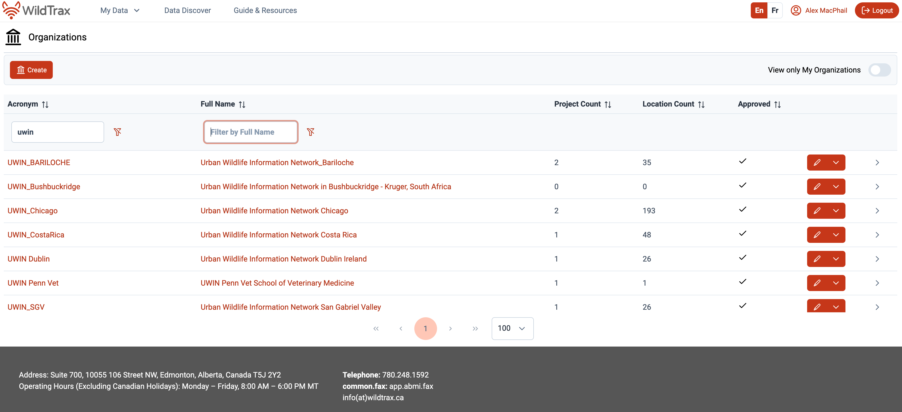

UWIN Summit: Data Science and Technology Workshop

Duration: 2 hours
Goal: Build a shared understanding of how data science and technology can better support collaborative research, identify barriers and opportunities, and create actionable next steps.
By the end of the session, participants will:
- Have a shared understanding of the data lifecycle.
- Identify top barriers and opportunities for collaboration.
- Feel equipped with knowledge to move forward and reduce fear around technology adoption.
Agenda
- 20 mins – Welcome, framing the session, and overview of the research data lifecycle
- 25 mins – Individual worksheet activity: Identifying pinch points
- 15 mins – A success story in Edmonton
- 50 mins – Group discussion: Building a shared vision for collaboration
- 10 mins – Wrap-up and closing notes
- We intend to objectively meet people where they are, and focus-in on where the pinch points are in their workflows.
- Use Mentimeter for anonymous input and to gather diverse perspectives.
- Using home groups to synthesize ideas and bring them back together.
- Refine Mentimeter polls to ensure questions are clear and responses are actionable.
- Identify missing elements:
- Data sharing practices
- Discuss future UWIN needs
Workshop Sections
1. Welcome and Framing the Session (10 mins)
Presenter: Alex MacPhail
Purpose: Introduce WildTrax and contextualize it within big data and ecological research.
Content:
- Introductions (WildTrax team)
- Importance of data science and technology in ecological research
- Showcase WildTrax and its diverse network of partners
- Workshop goals:
- Bridge field ecology and big data with software
- Identify current limitations and opportunities
- Define next steps for collective data sharing and integration using WildTrax
- Bridge field ecology and big data with software
In one word, what’s your biggest challenge with data right now?
Jump in and share — no wrong answers, and your response is completely anonymous!
2. The Research Data Lifecycle (10 mins)
Presenters: Mason Fidino and Alex MacPhail
Purpose: Establish a shared understanding of the ecological data lifecycle and common language and framing this with the UWIN framework.
Lifecycle Stages:
- Data collection (fieldwork)
- Data management and quality control
- Processing and validation
- Analysis and reporting
- Publishing and sharing
- Integration and scaling across projects and networks
3. Identifying Pinch Points (25 mins)
Presenter: Dianne Russell
Goal: Identify barriers in the research data lifecycle and explore potential solutions.
Activity:
Participants complete a worksheet to:
- Identify key pinch points in their work.
- Explore why these pinch points exist.
- Note what has been tried to address them.
- Share anecdotes or real-world examples.
Worksheet Questions:
- What are the biggest challenges you face in the data lifecycle? (List 2–3)
- What barriers or limitations caused these challenges?
- What tools or services could UWIN/WildTrax provide to help?
- If these challenges were resolved, what projects would you be excited to pursue?
4. A Success Story with the City of Edmonton (15 mins)
Presenter: Catherine Shier, City of Edmonton
Goal: Showcase how long-term monitoring programs can evolve through improved data management and integration.
Story Focus:
- Transition from siloed, standalone systems to connected, living datasets.
- Timely data products generated within the same season of collection.
- Improved collaboration through shared, accessible data resources.
Key Message: WildTrax enables organizations to transform legacy datasets into valuable, connected resources that drive collaboration and innovation.
6. Wrap-up and Closing Notes (10 mins)
Summary:
- Highlight key takeaways:
- Barriers identified (via home group report-outs)
- Proposed solutions
- Agreed-upon priorities and pilot projects
- Clarify next steps and accountability:
- Assign leads or working groups
- Share resources:
- WildTrax guides and documentation
- Data management templates
- Communication channels for ongoing collaboration